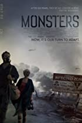

Film Reviews - Monsters
Welcome to my film reviews page ...
We saw this film MONSTERS in a great atmosphere (at the Royal College of Surgeons), Jameson's Irish Whisky were
sponsoring the event as part of their Jameson's Cult Film Club series - and there were some very "happy" people
around, there was a lot of war / military zone type decorations up in the reception area and the bar, a lot of
the staff were in anti-contamination suits and gas masks – really getting into the swing of the theme of the
film – which was based on a Year 2000 "Infected Zone" quarantined off between Mexico and the US, that was full
of new life forms - monsters from Mars!
To get us more in the mood before the show started were treated by some of the staff, to a "live" mock interview
by a "CNN reporter" talking to two tourists who had just "experienced" travelling through the "Infected Zone"
(quite comic really!)
This was followed by a Q&A session with the MONSTERS Director (GARETH EDWARDS) and the films editor COLIN GOUDIE
– who told us more about the making of the film and what they were trying to achieve
The premise of MONSTERS is that six years ago, NASA discovered the possibility of alien life within our solar system.
A probe was launched to collect samples, but crashed upon re-entry over Central America. Soon after, new life form began
to appear and half of Mexico was quarantined as an "INFECTED ZONE". Today, the American and Mexican military still struggle
to contain "the creatures"......
Our story begins when a US photo-journalist Andrew Kaulder begrudgingly agrees to escort a wayward tourist Samantha Wynden
(who just happens to be the daughter of his boss), through the infected zone in Mexico to the safety of the US border.
There is no real story / plot as such – and you don't actually see any monsters until quite late into the film – the idea
is more about the build up of "suspense" as to what will happens when they eventually come across the monsters – rather than
the monsters themselves (a big tribute to Jaws here – as mentioned by the Director in the Q&A before the film started) and
that the fact that the creatures moved around mostly at night – meant a lot of suspense build up was achieved with sound effects
this could make the film appear a little dark on occasion
Whitney Able (as Samantha) is very pleasant on the eye and acted quite well considering what she had to work with and should go
onto better things, Scoot McNairy (as Andrew) was a little more rough around the edges but was fine in this film. An interesting
sub-plot of MONSTERS is the growing relationship between these two main lead characters.
All other characters in the film were un-credited and were basically locals hired by the director on the days of shooting – and
were just asked to play themselves – or to act out scenes that the director wished to shoot that day
The cinematography is pretty much "hand-held" throughout, following the action through the eyes of the couple themselves and
always on the move – which adds to the build up of tension
I actually quite liked MONSTERS, but I wouldn't class it as a main stream film. I think Jameson's were quite right to class MONSTERS
as one of their "cult" films – because, with this audience, that was really "up for the gig" it went down VERY WELL on the night
especially for the way that the whisky, the pre-amble interview, the décor, the whisky, decontaminations suits, the whisky, gas masks,
Q&A session with the Director and Film Editor all set the ambiance so well, it was all really well received ...
Oh, ... and did I mention the whisky!
MONSTERS is 94mins long, is an R certificate and will be on general release from 1st December 2010